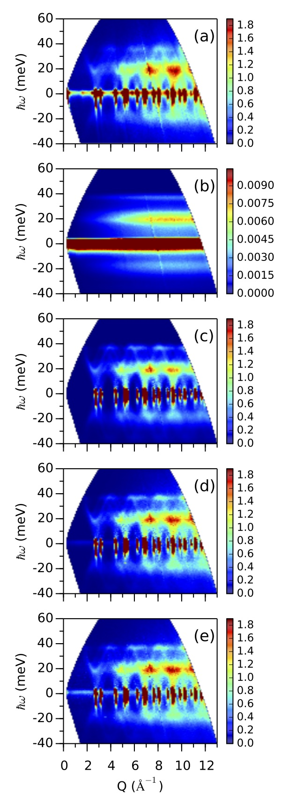

Coherent inelastic single-phonon scattering from a powder sample -- Aluminum
The scattering intensity
is given by
$$ \begin{aligned}
{\left(\frac{d^2\sigma}{d\Omega dE_f}\right)}_{inc\pm 1} = &
\frac{\sigma_{coh}}{4\pi} \frac{k_f}{k_i} \frac{(2\pi)^3}{v_0}
\exp(-2W) \\
& \times \sum_s \sum_{\mathbf{\tau}}
\frac{ \hbar^2 ( \mathbf{Q} \cdot \mathbf{e}_s )^2 }{2M\;E_s}
\frac{1}{2} \left\{ \coth\left(\frac{\hbar \omega}{2k_B T}\right) \pm 1 \right\}
\delta(E- E_s) \; \delta(\mathbf{Q} - \mathbf{q} - \mathbf{\tau})
\end{aligned}
$$
where
$\mathbf{e}_s$ is the polarization of the phonon mode,
$E_s$ is the energy of the phonon mode,
$\mathbf{\tau}$ is a reciprocal lattice vector.
The total cross section for a phonon mode
of energy $E$ at $\mathbf{Q}$ can be
deduced as
$$
\sigma_{\mathbf{Q}} =
\frac{\sigma_{coh}}{4\pi}
\frac{k_f}{k_i}
\frac{\left( 2\pi \right)^3}{v_0}
\exp(-2W)
\frac{\hbar^2 ({\mathbf{Q}}\cdot {\mathbf{e}})^2}{2M E}
\frac{1}{2}
\left\{ coth\left(\frac{\hbar \omega}{2k_B T}\right) \pm 1 \right \}
\frac{1}{2 k_i k_f Q}
$$
The main input for this kernel is the energies and polarization vectors
of phonon modes in a brillouin zone.
MCViNE simulation results
